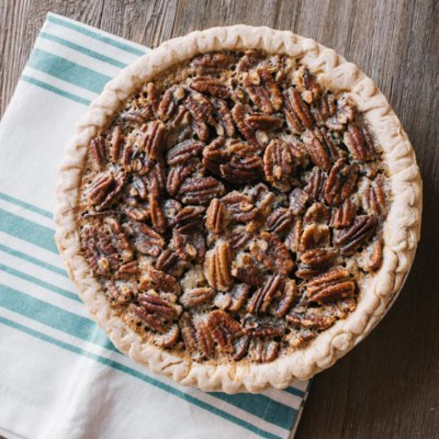

Pumpkin Pecan Pie

Description
Pecans make a luscious pumpkin pie even better. Try this Pumpkin Pecan Pie this holiday season; it's sure to satisfy the sweet-lovers in your family.
Ingredients
- 1 unbaked 9-inch (4-cup volume) deep-dish pie shell
- 1 cup LIBBY'S® 100% Pure Pumpkin
- 3 large eggs, divided
- 1 teaspoon pumpkin pie spice
- 2/3 cup light corn syrup
- 1/2 cup granulated sugar
- 3 tablespoons butter, melted
- 1/2 teaspoon vanilla extract
- 1 cup pecan halves
Steps
- Preheat oven to 350° F.
- Combine pumpkin, sugar, 1 egg and pumpkin pie spice in medium bowl; stir well. Spread over bottom of pie shell.
- Combine corn syrup, sugar, remaining 2 eggs, butter and vanilla extract in same bowl; stir in nuts. Spoon over pumpkin layer.
- Bake for 50 minutes or until knife inserted in center comes out clean. Cool on wire rack.
Back to the Recipes